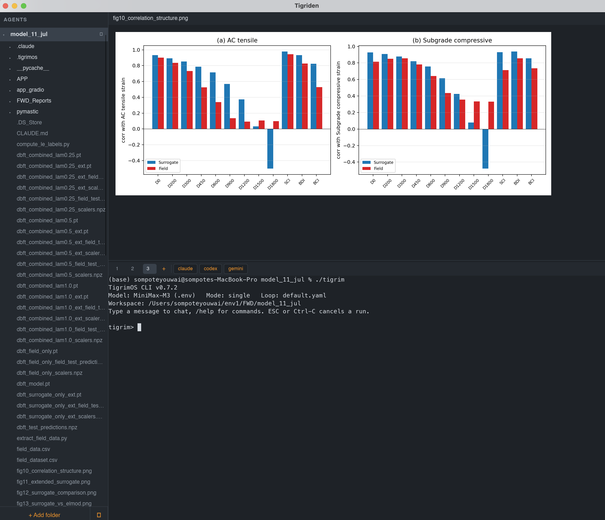

A tiny desktop IDE for supervising AI coding agents — run as many as you like, each in its own folder, across as many windows as you need. See every file they touch, and roll it back.
New in 0.1.1 → file change tracking & rollback

A full IDE is overkill for supervising agents; a bare multiplexer gives you no files and no editor. Tigriden is what's in between: one window, one session per folder, agent + files + editor together.
A live Changes (N) list of every file the agent modified, added, or deleted — with syntax-highlighted diffs and one-click rollback.
File ▸ New Window runs independent windows in parallel. Name preset groups as [[teams]] and give each window its own agent buttons.
Preset buttons launch claude, codex, gemini — or any command — fully configurable.
VTE-compliant emulation with a real PTY. vim, top, and the Claude Code TUI just work — truecolor, mouse selection, image paste.
Gitignore-aware, updates as agents create and delete files. Right-click for new file, rename, duplicate, reveal, trash, and more.
Syntax highlighting for 40+ languages, plus rendered Markdown, images, CSV tables, and PDF text. Auto-reloads when an agent edits the open file.
Every folder gets its own shell, tree, and open file — plus extra terminal tabs for git or a second agent. Layout restored on relaunch.
Drop files from Finder onto the window to paste their paths straight into the agent prompt. Recent folders reopen from the ⟳ button.
Pure Rust — no Electron, no webview, no C regex libraries. A real macOS menu bar routed to the focused pane.
Turn it on with File ▸ Show Changes Panel and a Changes (N) list appears under each folder. Every file the agent touched since the baseline shows up within ~1 second of the write — click a row for the diff, right-click to throw it away.
Status runs on a background thread, so a busy agent never stalls the UI.
Kept out of your project in ~/Library/Application Support/tigriden/snapshots/ — nothing added to the folder.
Discard Changes… reverts a single file; the ↺ button reverts everything — both behind a confirmation.
Prebuilt for macOS and Windows — no Rust required.
Prefer a bare macOS binary? The release also ships
arm64 ·
x86_64
tarballs — untar and run ./tigriden
macOS, first launch only (not notarized): right-click → Open → Open, or
xattr -d com.apple.quarantine /Applications/Tigriden.app
Windows is new in 0.1.1 and untested on real hardware — each terminal launches cmd.exe (or %COMSPEC%).
Feedback welcome.
$ git clone https://github.com/Sompote/Tigriden.git $ cd Tigriden $ cargo build --release $ ./target/release/tigriden
Add a folder — a login shell opens there. Add more folders to run more agents in parallel, or File ▸ New Window for a whole second set.
Launch an agent with a preset button, or type any command. The + tab opens extra shells in the same folder.
Watch and steer — the tree updates as the agent works; click any file to inspect or tweak it without leaving the window.
Review and roll back — the Changes panel lists every touched file. Read the diff, keep what works, discard the rest.
theme = "dark" # "dark" | "light" font_family = "Menlo" font_size = 13.0 scrollback = 10000 [[presets]] label = "claude" command = "claude" send_enter = true [[teams]] # pick a team per window (0.1.1) name = "reviewers" [[teams.presets]] label = "claude-review" command = "claude /review" send_enter = true
Keyboard reference, architecture, and roadmap live in the full docs on GitHub.